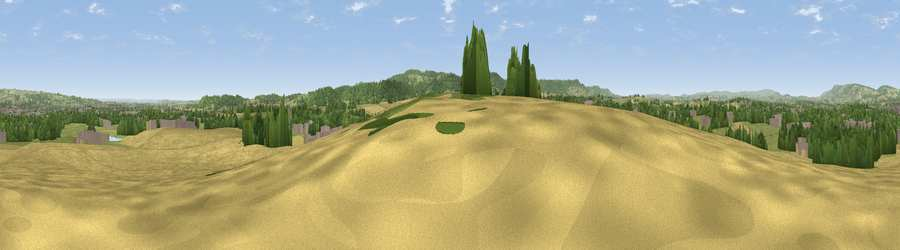

Viewpoint near Trull
#14262 in England · top 31% of its area beats it · near TrullWhere it is
The exact computed spot (ST 22464 22396). Click the marker for map links.
The view, rendered

A 360° render of this exact spot computed from the terrain model, tree cover and land cover — summer colours, afternoon light, calibrated against photographs of famous viewpoints. Real trees, hedges and buildings will differ in detail.
The panorama
Grey silhouette: terrain skyline in each direction (720 bearings, Earth curvature and refraction included). Dashed green: skyline with trees (+15 m) and buildings (+8 m) as obstacles. Blue strip: how far the ground is visible on each bearing.
Where the view opens
Wedge length = distance to the farthest visible ground on that bearing (vegetation-aware). Rings at 10, 25 and 50 km.
What fills the view
32% cropland · 29% grassland · 29% woodland · 10% built-up
Angular shares of the visible panorama (visual magnitude), not map area. Landscape diversity 0.58 (0–1 Shannon).
Key numbers
More beautiful places nearby
The staircase of upgrades: each row has a higher view potential than everything closer. Driving times are estimates from straight-line distance, calibrated against real road routing — check an actual route before setting out.
| Place | Direction | Drive | Score |
|---|---|---|---|
| Viewpoint near Corfe | SE · 3 km | ~8 min | 60.1 |
| Viewpoint near Stoke St Mary | E · 4 km | ~9 min | 66.3 |
| Viewpoint near Pitminster | S · 4 km | ~10 min | 71.3 |
| Viewpoint near Pitminster | SSW · 6 km | ~12 min | 74.2 |
| Viewpoint near Pitminster | SSW · 6 km | ~13 min | 77.3 |
| Viewpoint near Broomfield | NNW · 10 km | ~20 min | 78.5 |
| Cothelstone Hill | NNW · 11 km | ~21 min | 82.1 |
| Viewpoint near West Bagborough | NNW · 13 km | ~24 min | 84.3 |
50.99572, -3.10623 · source: osm viewpoint · position refined by local search. Computed location — check access rights before visiting.